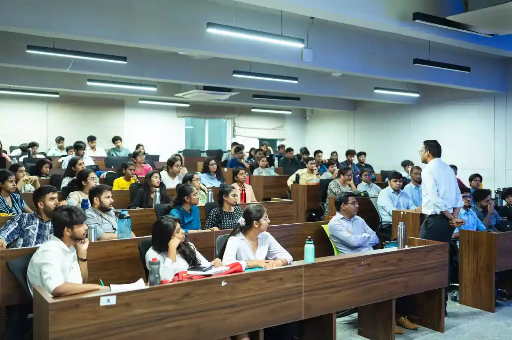
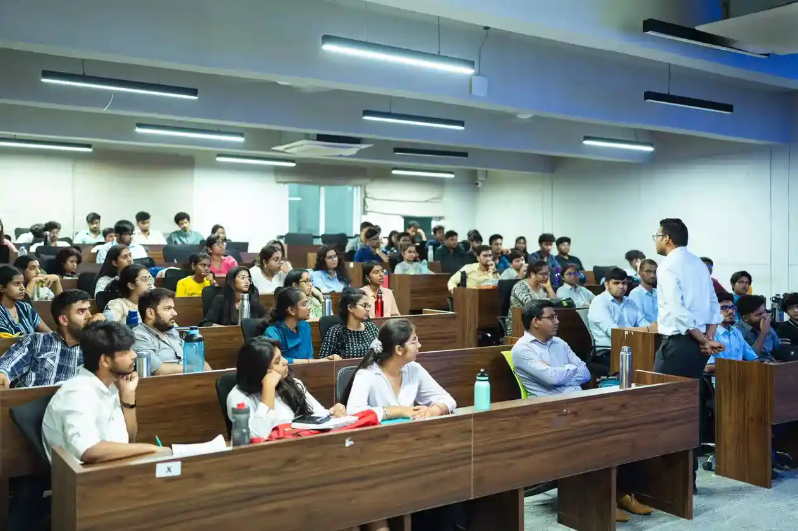

MBA at Woxsen University helps students acquire management skills & business acumen. Innovative pedagogies like Applied Learning, Industry interface,an International Student Exchange and more, help students stand out.
Ph.D.
Doctor of Philosophy
Ph.D. at Woxsen University is high-potential, research-based, interdisciplinary program across the breadth of three academic fields. The program offers an unparalleled platform to conduct world-class research.
B.Tech
Bachelor of Technology
Woxsen University's B.Tech program covers the entire spectrum of new-age specializations. This program seamlessly integrates basic science concepts to the latest technologies with relevant practice through lab and projects for building problem-solving skills.
BBA (Hons.)
Bachelor of Business Administration Honours
Woxsen University's BBA program has five specialisations that open exciting opportunities for students in the business world. The program empowers students to shape their passion into a career by providing a solid foundation in management & administration.
B.Des (Hons.)
Bachelor of Design
Woxsen University 's B.Des (Hons .) offers four specialisations that form the foundation years of students in the field through state-of-the-art design labs & studios. The programs help students gain the latest knowledge, techniques, sustainable practices with international exposure.
B.Arch
Bachelor of Architecture
The five-year B-Arch Program at Woxsen University is accredited by the Council of Architecture (COA) and is designed to change and impact society. It offers a Total Learning Experience (TLE) to students through a unique ensemble of architectural pedagogy.
BA (Hons.)
Bachelor of Arts
Woxsen University's BA (Hons.) offers eight specialisations that help students develop multidisciplinary expertise in key domains of the Liberal Arts & Humanities field. Integrating a contemporary curriculum and holistic academic delivery makes for an enlightening learning experience for the students.
BA-LLB (Hons.)
Bachelor of Arts and Bachelor of Legislative Law
The integrated Bachelor of Arts & Bachelor of Legislative Law (Hons.) program provides a multidisciplinary approach with a focus on Liberal Art, Humanities, and Law.
BBA-LLB (Hons.)
Bachelor of Business Administration and Bachelor of Legislative Law (Honours)
The Honours Degree in BBA-LLB Integrated Program is a niche-forming amalgamation of Woxsen's one-of-a-kind management program coupled with the intricacies of the legal world.
B.Sc (Hons.)
Bachelor of Science Honours
Woxsen University's B.Sc (Hons.) program provides a specialized curriculum, comprising six specialisations, to equip students with the requisite knowledge, skills, and abilities (KSP) needed to develop innovative solutions to complex problems. Our unique pedagogy imparts theoretical knowledge alongside practical learning experiences, enabling students to become industry-ready for rapid technological advancements.
 
